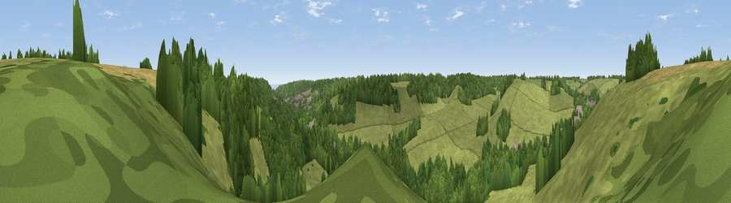

Viewpoint near Temple Ewell
#38918 in England · top 68% of its area beats it · near Temple EwellWhere it is
The exact computed spot (TR 28075 45025). Click the marker for map links.
The view, rendered

A 360° render of this exact spot computed from the terrain model, tree cover and land cover — summer colours, afternoon light, calibrated against photographs of famous viewpoints. Real trees, hedges and buildings will differ in detail.
The panorama
Grey silhouette: terrain skyline in each direction (720 bearings, Earth curvature and refraction included). Dashed green: skyline with trees (+15 m) and buildings (+8 m) as obstacles. Blue strip: how far the ground is visible on each bearing.
Where the view opens
Wedge length = distance to the farthest visible ground on that bearing (vegetation-aware). Rings at 10, 25 and 50 km.
What fills the view
52% grassland · 44% woodland · 3% cropland · 1% built-up
Angular shares of the visible panorama (visual magnitude), not map area. Landscape diversity 0.37 (0–1 Shannon).
Key numbers
More beautiful places nearby
The staircase of upgrades: each row has a higher view potential than everything closer. Driving times are estimates from straight-line distance, calibrated against real road routing — check an actual route before setting out.
| Place | Direction | Drive | Score |
|---|---|---|---|
| Viewpoint near River | SSE · 3 km | ~7 min | 42.4 |
| Viewpoint near Dover | SSE · 5 km | ~12 min | 49.0 |
| Viewpoint near Dover | SSE · 5 km | ~12 min | 76.4 |
| Viewpoint near Capel-le-Ferne | S · 6 km | ~13 min | 77.1 |
| Viewpoint near Capel-le-Ferne | S · 6 km | ~13 min | 77.9 |
| Viewpoint near Capel-le-Ferne | SSW · 8 km | ~17 min | 80.2 |
| Viewpoint near Willingdon | WSW · 82 km | ~106 min | 83.4 |
| Wilmington Hill | WSW · 84 km | ~108 min | 85.4 |
51.15899, 1.26040 · source: screening · position refined by local search. Computed location — check access rights before visiting.